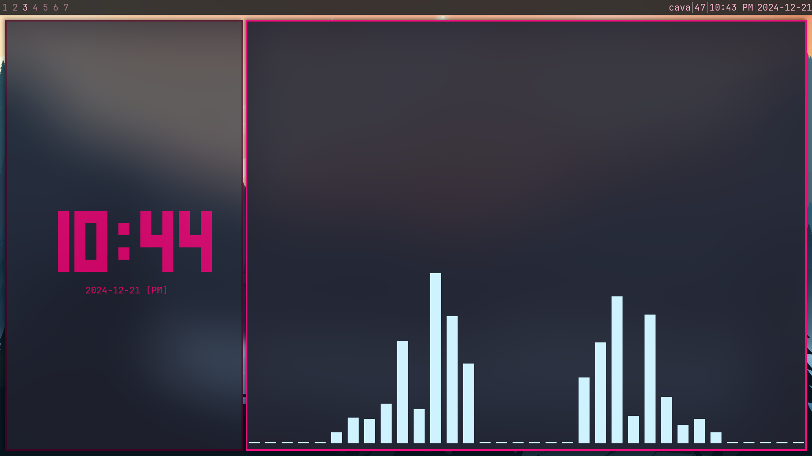

Date: 22/12/2024| The i3WM experience
# What is i3?
i3 is a window manager, most importantly, a tiling window manager.
A very popular tiling window manager is hyprland, it is a very cool and customizable one, but
since hyprland is not available on Linux Mint or any debian/ubuntu distro (i'm pretty sure it doesn't work)
and the fact that i don't really have much experience with tiling window managers or window managers at all,
I decided to just try awesomeWM since a lot of people on YouTube said it was good for beginners, however
when i used awesomeWM it just didn't feel that good, and i know you can really tweak a lot of the snappy or
ugly configuration, in my opinion, but it just felt a little too hard, so i went on to reddit and asked in r/linuxmint
about which is the best and easiest WM.
# Trying i3
And, a lot of people recommended i3 to me, and i just installed it and looked very nothing-like, a black wallpaper, and a
bar at the bottom, that's what you get with i3, and here, is the proccess of how i turned it into:

# Learning the keybinds
i3 has a lot of keybinds for navigating it, and it will be the same for any WM, don't expect to use a WM like a normal
DE with your mouse cursor, a lot of WMs are meant for being used with the keyboard only, resulting in a fast workflow.
And, to be honest, a lot of i3 keybinds are very easy and make a lot of sense, also in i3 you refer to $mod as your modifier
key, you can choose it while installing i3, and i set it to the super key or windows key, you also have the option to set
it to the alt key.
A few examples of i3's easy keybindings are: $mod + Return to open a terminal, $mod + 2 to go to the second workspace,
$mod + Shift + 2 to move a window to the second workspace.
It's a little hard, but i just learned all of the keybinds that i would use the most.
I also watched Alex Booker on youtube and his i3 tutorials, it's a series of 3 tutorials
that help you get started with i3
# Configuring
A lot of times, if you want to change anything in your i3 desktop, you need to do it through the config file, which is located in the .config dotfile
and there are a lot of things you can do i'm not gonna cover them as i3 configurations are their own article, and well it's just, bindsym if you want to bind a key,
exec if you want to add a startup application and that's pretty much the most important commands in the i3 config. There are also stuff like colors, and fonts that
you can change, and you can just read i3 User Guide and they have a ton of useful information in there.
My "Rice"
you already say my desktop, i have picom set with a lot of blur that looks really nice, and also added some fading effects, which removes stuff like screen tearing when
switching workspaces, the fun thing is, you do ALL of this, in config files, in a text editor, so you gotta learn a little bit of CSS and whatever i3 language it uses.
And, i love i3, i can use it so effieciently, and i think i will always use i3 from now on!
thanks for reading!
-arkboi